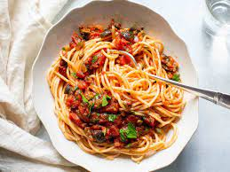

Pasta

Description
This is an old family recipe that has been passed down the Moussa family for 10 generations. A hearty delicuous Pasta
was a frugal way to get throuhg the tough winter months.
For best results use fresh tomatoes for the sauce, and simmer on low overnight.
Ingrediants
- 2 pounds - Tomatoes
- 3 Fresh Garlic Cloves
- 4 Large Onions
- 1 Pound Spagetti
- 3 tablespoons salt
Steps
- Cut tomatoes into small cubes
- Cut onions into large pieces
- Sauti Onions and Garlic in Olive Oil
- Add tomatoes
- Cook for two hours